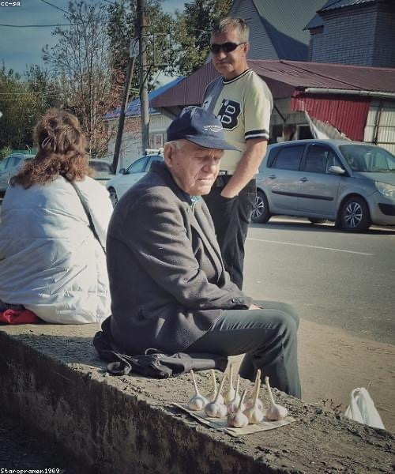
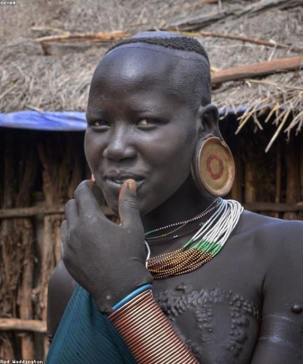
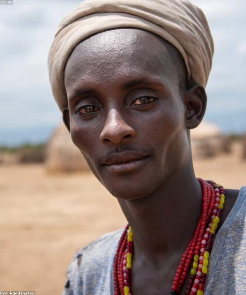
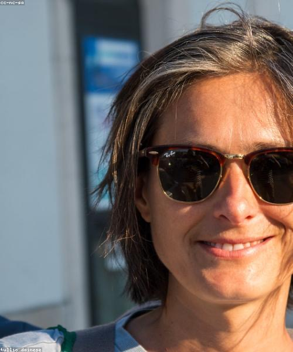

Des photos intemporelles qui racontent votre histoire
Photographie professionnelle pour vos moments de vie, vos marques et vos souvenirs inoubliables.
Réserver une séanceLivraison rapide
Votre galerie retouchée, livrée en quelques jours
Approche personnelle
Chaque séance est pensée autour de votre vision
Style naturel
Des photos authentiques, pleines d’émotion et d’élégance
« Alice a un don rare — elle capture l’émotion d’un instant, pas seulement l’instant. Chaque photo est un souvenir que l’on garde pour toujours. »
Élise Caron
Mariée
La photographie, pour moi, est plus qu’une image — c’est une émotion préservée. Je cherche la lumière, l’émotion et ces instants suspendus, uniques, qui font qu’une histoire mérite d’être racontée.
Du portrait intimiste à l’histoire de marque complète, chaque séance est construite autour de votre vision.
Séances portrait
Des portraits intemporels qui révèlent la personnalité, l’humeur et l’histoire silencieuse de chaque visage.
Mariages & événements
Une couverture sincère et émouvante de vos mariages et réceptions, tels qu’ils se vivent vraiment.
Séances famille
Des moments de famille chaleureux et naturels, dans une lumière douce, intime et honnête.
Marque & éditorial
Des histoires visuelles raffinées qui donnent vie à vos produits et à votre marque avec élégance.
Heure dorée
Un éditorial à la poursuite des dernières lumières chaudes du jour, sur des étoffes douces et texturées.
Les premiers jours de Zoé
Les tout premiers instants d’une vie, capturés dans un cocon calme baigné de lumière naturelle.
Un serment murmuré
Une cérémonie intime documentée en images sincères et émouvantes, de l’aube au crépuscule.
Maison Verte
Une histoire de marque inspirée par la nature, la chaleur et la beauté de l’artisanat.
Capturer au-delà du cadre
Chaque séance est une collaboration. Je prends le temps de comprendre votre histoire, puis je la traduis en images sincères, chaleureuses et durables.
Commencer votre histoire0
Années derrière l’objectif
0
Histoires racontées
0
Prix & publications
« Alice a photographié notre mariage avec un art fou. Chaque image est vivante et sincère. »
Amara Okafor
Mariée
« La séance la plus naturelle que j’aie jamais vécue. Le résultat parle de lui-même. »
Lukas Meyer
Directeur artistique
« Sincère, patiente et terriblement talentueuse. Notre séance famille a eu la douceur d’un après-midi tranquille. »
Sofia Bianchi
Séance famille
Écrivez-moi via le formulaire de contact ou par email, partagez votre vision et vos dates — je vous envoie une proposition sur mesure sous 48 h.
La préparation en amont, la séance elle-même, la retouche professionnelle et une galerie privée en ligne avec téléchargements haute définition.
Les galeries retouchées sont livrées sous 7 à 14 jours selon l’ampleur du projet.
Absolument — je travaille localement et me déplace partout dans le monde pour les beaux projets.
Oui — tirages fine-art et albums sont disponibles en option, en qualité premium, vérifiés à la main avant expédition.
Prêt à raconter votre histoire ?
Écrivez-moi pour discuter de votre projet, de vos dates et de votre vision. Je vous réponds sous 48 h.
contact@alice-r.com